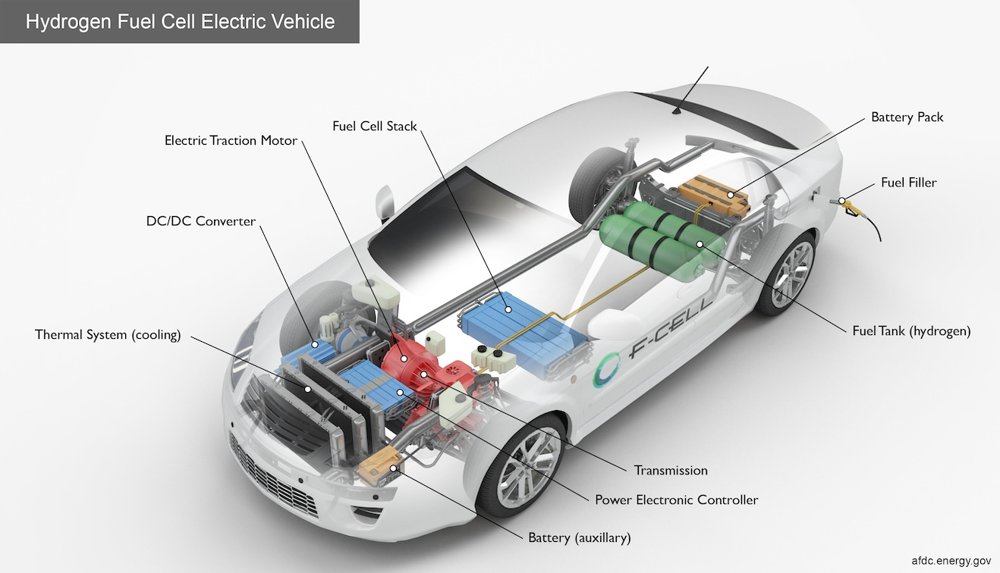

Hydrogen-powered cars utilize a process explained by the US Department of Energy. In these vehicles, pure hydrogen is supplied to a dedicated tank.
Within a PEM fuel cell, an electrolyte membrane sits between a positive cathode and a negative anode. Hydrogen goes to the anode, and oxygen from the air goes to
the cathode. Through an electrochemical reaction in the fuel cell catalyst, hydrogen molecules split into protons and electrons. Protons travel to the cathode
through the membrane, while electrons follow an external circuit, providing power to the electric car. They reunite with protons on the cathode, combining with
oxygen molecules to create water ("Hydrogen," US Department of Energy).

This is a diagram of a hydrogen fuel cell powered vehicle.
Pros and Cons
Hydrogen as a fuel source offers domestic production possibilities from various resources, promoting national energy security and diversifying transportation energy.
Hydrogen fuel cells emit only water vapor and warm air, making them more environmentally sustainable than gas-powered, hybrid, and electric cars. Hydrogen fuel cells
in regular-sized passenger cars provide a 300-mile range, comparable to modern electric cars. Hydrogen is non-toxic and quickly dissipates when released.
However, challenges include the complex storage requirements, especially for larger vehicles like trucks or SUVs due to weight limitations imposed by the US Department of
Transportation. Additionally, reducing the cost of fuel cell production without compromising performance is crucial for competitiveness. Limited hydrogen fuel stations,
currently concentrated in California, pose another obstacle to widespread adoption. There is also the added risk of hydrogen stations exploding,
like the incident that happened in Norway a couple of years back. This is due to how hydrogen is easier and quicker to ignite than gasoline.
New hydrogen fuel cell systems tests have been put in place, like tank leak tests, garage leak simulations, and hydrogen tank drop tests, to improve the safety of
hydrogen fuel cells. As more gets researched, the safer hydrogen fuel cells will become.